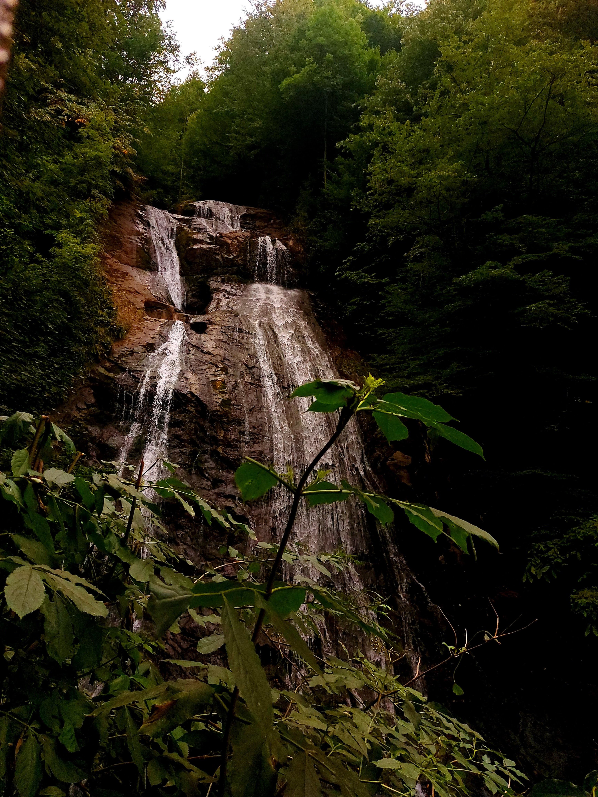

Güzeldere Şelalesi


Düzce, 1999 yılında il statüsü kazanmış, Batı Karadeniz’de bulunan şirin ve yemyeşil bir şehirdir. 2016 yılında yapılan nüfus sayımına göre 370.371 kişinin yaşadığı Düzce, Karadeniz kıyısına paralel dağlara sahiptir.